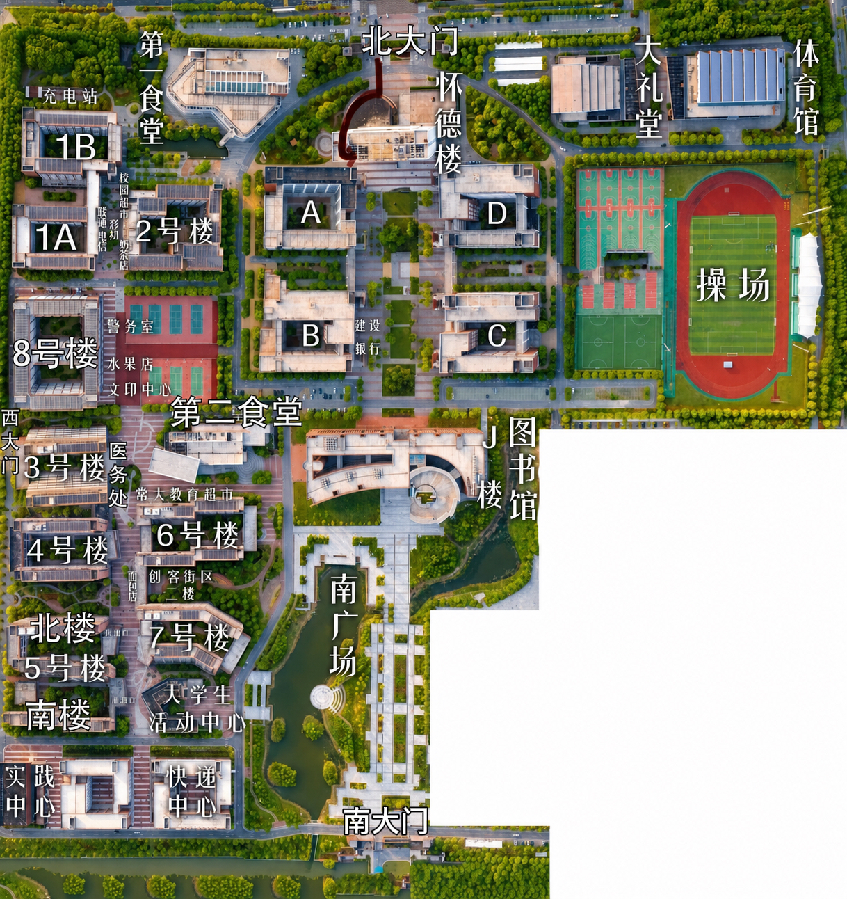

报到与行课2026 级新生报到时间待定，最终以纸质录取通知书标注时间为准。
录取通知书统一通过 EMS 寄送，周期为 7 月底至 8 月初，可登录学校招生官网查询物流状态。
CHANGZHOU UNIVERSITY HUAIDE COLLEGE · 2026
把入学、生活、学习中最常被问到的事，一次说明白。
CAMPUS MAP
报到前先熟悉北大门、宿舍区、食堂、图书馆、操场与快递中心的位置。

该图片并非用于盈利，侵权连系删除FOR EVERY NEW HUAIDER
本页根据 2026 级录取新生关注的入学、生活与学习问题整理。时间、收费等内容如有调整，请始终以纸质录取通知书及学校最新公告为准。
FRESHMAN FAQ
点击板块展开查看详情
报到与行课2026 级新生报到时间待定，最终以纸质录取通知书标注时间为准。
录取通知书统一通过 EMS 寄送，周期为 7 月底至 8 月初，可登录学校招生官网查询物流状态。
全校共有 8 栋学生公寓：2、3、4、5、7 号楼为女生公寓，1、6、8 号楼为男生公寓。均配备独立卫浴、阳台、洗漱台、空调、学习桌椅、书柜和衣柜，24 小时通水、通电、通网络。
费用与床位住宿费 1000-1500 元 / 年；水费免费，电费分摊。宿舍和床位由学校统一分配，不可自主选择。床位尺寸为 90cm × 200cm。
宿舍配置宽带免费使用，绑定校园卡账号即可登录；楼道设有公共热水设备。男生 8 号楼为六人间，女生 4 号楼为四人间，基础条件相近。
走读申请因特殊情况需校外住宿，须提交走读申请并取得家长同意，具体流程咨询辅导员。
床位安排主要依据班级与学号。提前到校可在当日安排内选择床位。
线上申领校园卡不随录取材料统一发放，暑期申领通道已开启，可通过二维码或学校公众号菜单栏按提示申请。
使用权益办理后可免费使用校园网络；支持邮寄到家，减少开学现场排队。
两座食堂一食堂一楼主营面食与自选餐，二楼设清真窗口和教职工餐厅；二食堂一楼菜品、面食品类最全，二楼主打特色小吃。
消费与兼职食堂支持微信、支付宝无现金支付，校内允许外卖。每月餐饮约 600-800 元，综合生活开支约 1500 元 / 月；校内有兼职与勤工助学岗位。
公共浴室学生公寓楼下设置公共浴室，每日 16:30 起开放，单次洗浴约 1 元。可按需选购 2m × 1.2m 浴帘。
快递服务快递站位于校区南侧，沿公寓楼通道直行可达。收件地址：江苏省泰州市靖江市新港大道 136 号常州大学怀德学院。尽量在 21:00 前取件。
携带材料录取通知书、身份证、6 张一寸免冠证件照；家庭经济困难学生另带民政部门贫困证明。报到地点在二食堂门口，需人脸核验。
现场流程现场登记 → 院系班级签到 → 领取宿舍钥匙安置行李 → 缴纳 20 元空调遥控器押金并领取设备。
学校地址江苏省泰州市靖江市新港大道 136 号常州大学怀德学院。无法按时报到需履行请假手续。
注意事项严格遵守报到时间；逾期未报到将取消入学资格。
学费标准人文社科类 18000 元 / 学年，理工类 20000 元 / 学年，艺术类 22000 元 / 学年；每年各专业学费有所浮动。
缴费方式开学前 10 天将费用存入校方银行卡自动扣费，或通过“常州大学财务处”公众号线上缴费。助学贷款、建档立卡学生无需预存费用。
生源地贷款符合条件者可在户籍地申请，在校期间免息，毕业后分期还款，年度最高额度 16000 元，可用于学费、住宿费。
住宿与代办住宿费 1000-1500 元 / 学年，另有新生代办费，执行省内最新政策标准。
军训安排启动时间待定，常规安排在开学一周之后。须着统一服装，建议准备内搭衣物、防滑软鞋垫和防晒用品。
转专业政策入学后可申请转专业，由学院组织综合考核。本专业成绩位列前 30% 的申请者，考核通过概率更高。
考研保障图书馆设考研专属座位，开放时间 8:00-21:00；各公寓楼内也有自习室，便于备考。
学生社团社团覆盖文体、学术、公益、兴趣等领域，可自由报名。建议加入不超过 3 个，以免影响学业和作息。
日常出行校内可骑行非机动车；223 路、206 路公交连接校园与靖江市区，约 40 分钟。校门口共享电动车半小时约 2.5 元。
周边去处泰和吾悦商圈是主要购物场所；牧城公园是本地大型免费公园。往返江阴可公交换乘，约 7 元，最近高铁站为无锡江阴站。
校区位置学校位于靖江市斜桥镇，生态环境良好，生活配套完善。
院系特点全校男女比例约 4:6，逐步趋于均衡；建筑环境、机械材料、信息类男生较多，会计、经管、艺术、外语类女生较多。
本文为新生常见问题汇总，政策与日期如有变动，请以录取通知书及学校官方渠道发布的信息为准。
BE READY, BE CURIOUS
需要查阅各专业大一上学期课表，可联系文末工作人员获取。宿舍环境视频与官方新生群信息可在学校正式通知发布后补充至本页面。
新生咨询与交流